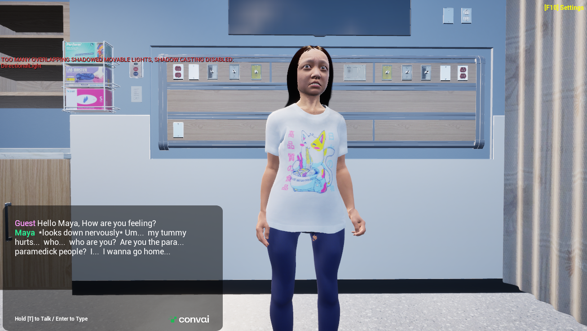
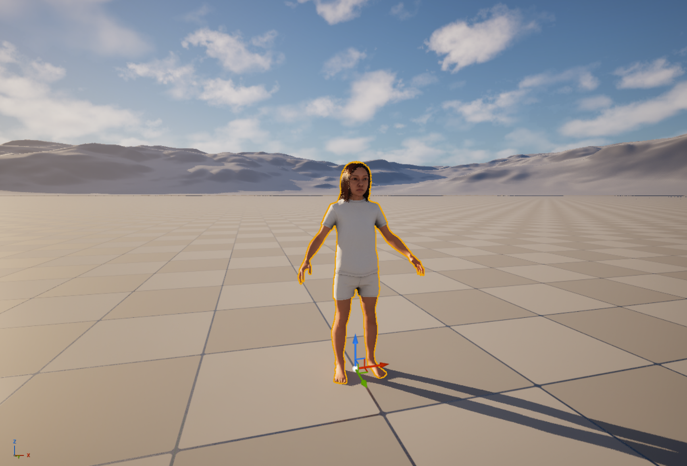

NAIT Capstone • Unreal Engine • VR
CAMS VR Medical Simulation
My NAIT Capstone project involved helping build a proof of concept for a medical simulation in VR. The project was for the Center of Advanced Medical Simulation at NAIT.
We were tasked with creating a realistic human model that could engage in immersive conversations in VR using their Digital Twin, which is a copy of their facility. We used Unreal Engine and an AI chatbot plugin at the client's request so conversations could be dynamic and allow a wide range of questions and answers.
Challenge
Build a focused feature or proof-of-concept that works clearly.
Solution
Break the work into small systems, test often, and improve through iteration.
What I Learned
Each project strengthened my programming, design, and debugging process.
- VR medical simulation proof of concept
- Unreal Engine development
- AI chatbot conversation integration
- Client-focused capstone project